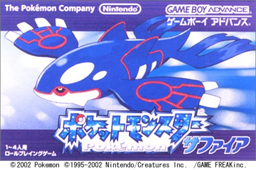
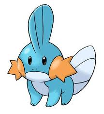
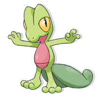
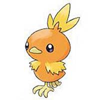
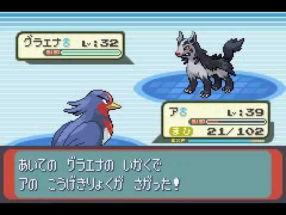
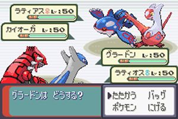

----ポケットモンスターサファイア----
『ポケットモンスター ルビー・サファイア』は2002年11月21日に株式会社ポケモンより発売されたゲームボーイアドバンス用ゲームソフト。ジャンルはRPG。ポケットモンスターシリーズ本編の第3作である。
このゲームは『ポケットモンスター ルビー』と『ポケットモンスター サファイア』の2つのバージョンからなる。2つのバージョンとも同じ内容だが登場するポケモンの種類や出現率に違いがあるほか、「ルビー」ではマグマ団が暗躍するのに対し、「サファイア」ではアクア団が暗躍するなどストーリーに若干の差異がある。同時発売の2種のストーリーが異なる作品は本作のみである。
2004年9月16日にマイナーチェンジ版である『ポケットモンスター エメラルド』が発売され3つのバージョンから構成されることになった。
このページの作成者はこの作品がはじめてのポケモンである。（最初はレポート（セーブ）のやり方が分からなくて何度も最初からになった）
-------最初に選べる３体---------
|  ミズゴロウ |
 キモリ |
 アチャモ |
ゲームプレイ画面↓
